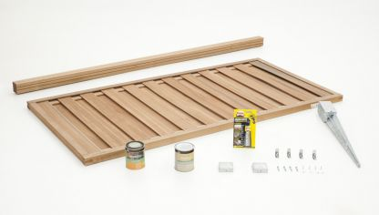

l lasur es un compuesto a base de resinas elásticas, disueltas al agua o al disolvente, que penetran en la madera sin formar una película que las aísle, es decir, mantienen el poro abierto para que la madera pueda respirar y soltar el vapor de agua
